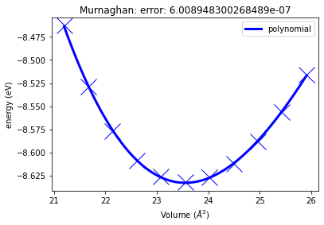
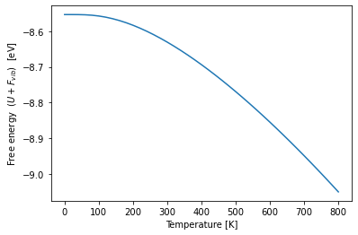
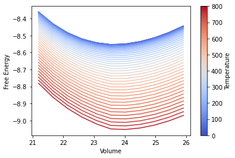

Day 2 - Up-scaling pyiron workflows¶
Following the introduction on the first day, the second day is focused on explaining how to up-scale existing simulation workflows. The tutorial is based on the molecular dynamics simulation code LAMMPS. Still the same protocols can also be executed with DFT codes like VASP and S/PHI/nX.
Energy volume curve¶
Following the tutorial from the first day, the energy volume curve is calculated using a for-loop over different strains.
import numpy as np
from pyiron import Project
pr = Project("scaleup")
pr.remove_jobs_silently(recursive=True)
job_mini = pr.create.job.Lammps(job_name="job_mini")
job_mini.structure = pr.create.structure.ase.bulk("Fe", cubic=True)
potential = job_mini.list_potentials()[0]
potential
'1997--Ackland-G-J--Fe--LAMMPS--ipr1'
job_mini.calc_minimize(pressure=0)
job_mini.potential = potential
job_mini.run()
The job job_mini was saved and received the ID: 266
alat_guess = job_mini.get_structure().cell[0,0]
np.round(alat_guess, 3)
2.866
for strain in np.linspace(0.9, 1.1, 11):
job_name = "lmp_" + str(np.round(strain,2)).replace(".", "_")
job = pr.create.job.Lammps(job_name=job_name)
print(alat_guess * strain**(1/3))
job.structure = pr.create.structure.ase.bulk("Fe", a=alat_guess * strain**(1/3), )
job.potential = potential
job.run()
2.7675753208676444
The job lmp_0_9 was saved and received the ID: 267
2.7879258702511898
The job lmp_0_92 was saved and received the ID: 268
2.8079835805272397
The job lmp_0_94 was saved and received the ID: 269
2.8277587643206537
The job lmp_0_96 was saved and received the ID: 270
2.8472611651817745
The job lmp_0_98 was saved and received the ID: 271
2.866499999891875
The job lmp_1_0 was saved and received the ID: 272
2.885483996845223
The job lmp_1_02 was saved and received the ID: 273
2.90422143094099
The job lmp_1_04 was saved and received the ID: 274
2.9227201553630375
The job lmp_1_06 was saved and received the ID: 275
2.9409876305783165
The job lmp_1_08 was saved and received the ID: 276
2.9590309508440615
The job lmp_1_1 was saved and received the ID: 277
vol_lst, eng_lst = [], []
for job in pr.iter_jobs():
if "lmp_" in job.job_name:
vol_lst.append(job["output/generic/volume"][-1])
eng_lst.append(job["output/generic/energy_tot"][-1])
import matplotlib.pyplot as plt
plt.plot(vol_lst, eng_lst)
plt.xlabel("Volume")
plt.ylabel("Energy")
Text(0, 0.5, 'Energy')
Murnaghan Class¶
job_fe = pr.create.job.Lammps(job_name="job_fe")
job_fe.structure = job_mini.get_structure()
job_fe.potential = potential
job_murn = job_fe.copy_template(
new_job_name="job_murn"
)
murn = job_murn.create_job(
job_type=pr.job_type.Murnaghan,
job_name="murn"
)
murn.input
| Parameter | Value | Comment | |
|---|---|---|---|
| 0 | num_points | 11 | number of sample points |
| 1 | fit_type | polynomial | ['polynomial', 'birch', 'birchmurnaghan', 'murnaghan', 'pouriertarantola', 'vinet'] |
| 2 | fit_order | 3 | order of the fit polynom |
| 3 | vol_range | 0.1 | relative volume variation around volume defined by ref_ham |
murn.run()
The job murn was saved and received the ID: 278
The job strain_0_9 was saved and received the ID: 279
The job strain_0_92 was saved and received the ID: 280
The job strain_0_94 was saved and received the ID: 281
The job strain_0_96 was saved and received the ID: 282
The job strain_0_98 was saved and received the ID: 283
The job strain_1_0 was saved and received the ID: 284
The job strain_1_02 was saved and received the ID: 285
The job strain_1_04 was saved and received the ID: 286
The job strain_1_06 was saved and received the ID: 287
The job strain_1_08 was saved and received the ID: 288
The job strain_1_1 was saved and received the ID: 289
job_id: 279 finished
job_id: 280 finished
job_id: 281 finished
job_id: 282 finished
job_id: 283 finished
job_id: 284 finished
job_id: 285 finished
job_id: 286 finished
job_id: 287 finished
job_id: 288 finished
job_id: 289 finished
murn.plot()

Phonopy interface¶
job_bulk = job_fe.copy_template(
new_job_name="job_bulk"
)
job_bulk.run()
The job job_bulk was saved and received the ID: 290
job_phono = job_fe.copy_template(
new_job_name="job_phono"
)
phono = job_phono.create_job(
job_type=pr.job_type.PhonopyJob,
job_name="phono"
)
phono.input
| Parameter | Value | Comment | |
|---|---|---|---|
| 0 | interaction_range | 10.000000 | Minimal size of supercell, Ang |
| 1 | factor | 15.633302 | Frequency unit conversion factor (default for VASP) |
| 2 | displacement | 0.010000 | atoms displacement, Ang |
| 3 | dos_mesh | 20.000000 | mesh size for DOS calculation |
| 4 | primitive_matrix | NaN |
phono.run()
The job phono was saved and received the ID: 291
The job job_phono_0 was saved and received the ID: 292
phono.plot_dos()
<AxesSubplot:title={'center':'Phonon DOS vs Energy'}, xlabel='Frequency [THz]', ylabel='DOS'>
temperatures = np.linspace(0, 800, 41)
bulk_thermal_properties = phono.get_thermal_properties(temperatures=temperatures)
plt.plot(temperatures, job_bulk.output.energy_pot[-1] + bulk_thermal_properties.free_energies)
plt.xlabel("Temperature [K]")
plt.ylabel("Free energy ($U+F_{vib}$) [eV]");

Quasi-harmonic approximation¶
https://pyiron.org/phasediagram-workshop-2020/Introduction.html
job_strain = job_fe.copy_template(
new_job_name="job_strain"
)
murn_strain = job_strain.create_job(
job_type=pr.job_type.Murnaghan,
job_name="murn_strain"
)
phono_strain = job_strain.create_job(
job_type=pr.job_type.PhonopyJob,
job_name="phono_strain"
)
quasi_strain = phono_strain.create_job(
job_type=pr.job_type.QuasiHarmonicJob,
job_name="quasi_strain"
)
quasi_strain.input["temperature_end"] = 800
quasi_strain.input["temperature_steps"] = 41
murn_strain.run()
quasi_strain.run()
The job murn_strain was saved and received the ID: 293
The job strain_0_9 was saved and received the ID: 294
The job strain_0_92 was saved and received the ID: 295
The job strain_0_94 was saved and received the ID: 296
The job strain_0_96 was saved and received the ID: 297
The job strain_0_98 was saved and received the ID: 298
The job strain_1_0 was saved and received the ID: 299
The job strain_1_02 was saved and received the ID: 300
The job strain_1_04 was saved and received the ID: 301
The job strain_1_06 was saved and received the ID: 302
The job strain_1_08 was saved and received the ID: 303
The job strain_1_1 was saved and received the ID: 304
job_id: 294 finished
job_id: 295 finished
job_id: 296 finished
job_id: 297 finished
job_id: 298 finished
job_id: 299 finished
job_id: 300 finished
job_id: 301 finished
job_id: 302 finished
job_id: 303 finished
job_id: 304 finished
The job quasi_strain was saved and received the ID: 305
The job strain_0_9 was saved and received the ID: 306
The job job_strain_0 was saved and received the ID: 307
The job strain_0_92 was saved and received the ID: 308
The job job_strain_0 was saved and received the ID: 309
The job strain_0_94 was saved and received the ID: 310
The job job_strain_0 was saved and received the ID: 311
The job strain_0_96 was saved and received the ID: 312
The job job_strain_0 was saved and received the ID: 313
The job strain_0_98 was saved and received the ID: 314
The job job_strain_0 was saved and received the ID: 315
The job strain_1_0 was saved and received the ID: 316
The job job_strain_0 was saved and received the ID: 317
The job strain_1_02 was saved and received the ID: 318
The job job_strain_0 was saved and received the ID: 319
The job strain_1_04 was saved and received the ID: 320
The job job_strain_0 was saved and received the ID: 321
The job strain_1_06 was saved and received the ID: 322
The job job_strain_0 was saved and received the ID: 323
The job strain_1_08 was saved and received the ID: 324
The job job_strain_0 was saved and received the ID: 325
The job strain_1_1 was saved and received the ID: 326
The job job_strain_0 was saved and received the ID: 327
import matplotlib
cmap = matplotlib.cm.get_cmap('coolwarm')
# Iterate over the the output of the QuasiHarmonicJob to plot the temperature dependent free energy over volume
for i, [t, free_energy, v] in enumerate(
zip(quasi_strain["output/temperatures"].T,
quasi_strain["output/free_energy"].T,
quasi_strain["output/volumes"].T)):
color = cmap(i/len(quasi_strain["output/temperatures"].T))
# Add the energy of the Murnaghan Job to the vibrational free energy
plt.plot(v, free_energy + murn_strain["output/energy"], color=color)
# Add labels to the plot
plt.xlabel("Volume")
plt.ylabel("Free Energy")
# Add a color bar to visualise the temperature dependence
temperatures = quasi_strain["output/temperatures"]
normalize = matplotlib.colors.Normalize(vmin=temperatures.min(), vmax=temperatures.max())
scalarmappaple = matplotlib.cm.ScalarMappable(norm=normalize, cmap=cmap)
scalarmappaple.set_array(temperatures)
cbar = plt.colorbar(scalarmappaple)
cbar.set_label("Temperature")

# Use the optimise_volume() function of the QuasiHarmonicJob
v0_lst, free_eng_lst, entropy_lst, cv_lst = quasi_strain.optimise_volume(
# It requires the output energy of the energy volume curve as additional input
bulk_eng=murn_strain["output/energy"]
)
temperature_output_lst = quasi_strain["output/temperatures"][0]
plt.plot(temperature_output_lst, v0_lst)
plt.xlabel("Temperature")
plt.ylabel("Volume")
Text(0, 0.5, 'Volume')
plt.plot(temperature_output_lst, free_eng_lst)
plt.xlabel("Temperature")
plt.ylabel("Free Energy")
Text(0, 0.5, 'Free Energy')
Scriptjob¶
python_script = """\
from pyiron import Project
pr = Project("script")
job = pr.create.job.Lammps("lmp")
job.structure = pr.create.structure.ase.bulk("Fe")
job.run()
"""
with open("script.py", "w") as f:
f.writelines(python_script)
job_script = pr.create.job.ScriptJob("script")
job_script.script_path = "script.py"
job_script.run()
The job script was saved and received the ID: 328
pr.job_table()
| id | status | chemicalformula | job | subjob | projectpath | project | timestart | timestop | totalcputime | computer | hamilton | hamversion | parentid | masterid | |
|---|---|---|---|---|---|---|---|---|---|---|---|---|---|---|---|
| 0 | 266 | finished | Fe2 | job_mini | /job_mini | /Users/jan/pyiron/projects/ | 2021/2021-03-22-cecam-workshop/scaleup/ | 2021-03-22 20:55:17.696081 | 2021-03-22 20:55:18.155436 | 0.0 | pyiron@MacBook-Pro.local#1 | Lammps | 0.1 | None | NaN |
| 1 | 267 | finished | Fe | lmp_0_9 | /lmp_0_9 | /Users/jan/pyiron/projects/ | 2021/2021-03-22-cecam-workshop/scaleup/ | 2021-03-22 20:55:19.027660 | 2021-03-22 20:55:19.454001 | 0.0 | pyiron@MacBook-Pro.local#1 | Lammps | 0.1 | None | NaN |
| 2 | 268 | finished | Fe | lmp_0_92 | /lmp_0_92 | /Users/jan/pyiron/projects/ | 2021/2021-03-22-cecam-workshop/scaleup/ | 2021-03-22 20:55:20.231723 | 2021-03-22 20:55:20.653377 | 0.0 | pyiron@MacBook-Pro.local#1 | Lammps | 0.1 | None | NaN |
| 3 | 269 | finished | Fe | lmp_0_94 | /lmp_0_94 | /Users/jan/pyiron/projects/ | 2021/2021-03-22-cecam-workshop/scaleup/ | 2021-03-22 20:55:21.409363 | 2021-03-22 20:55:21.834768 | 0.0 | pyiron@MacBook-Pro.local#1 | Lammps | 0.1 | None | NaN |
| 4 | 270 | finished | Fe | lmp_0_96 | /lmp_0_96 | /Users/jan/pyiron/projects/ | 2021/2021-03-22-cecam-workshop/scaleup/ | 2021-03-22 20:55:22.658560 | 2021-03-22 20:55:23.095424 | 0.0 | pyiron@MacBook-Pro.local#1 | Lammps | 0.1 | None | NaN |
| ... | ... | ... | ... | ... | ... | ... | ... | ... | ... | ... | ... | ... | ... | ... | ... |
| 59 | 325 | finished | Fe128 | job_strain_0 | /job_strain_0 | /Users/jan/pyiron/projects/ | 2021/2021-03-22-cecam-workshop/scaleup/quasi_strain_hdf5/strain_1_08_hdf5/ | 2021-03-22 20:58:17.718340 | 2021-03-22 20:58:18.176678 | 0.0 | pyiron@MacBook-Pro.local#1 | Lammps | 0.1 | None | 324.0 |
| 60 | 326 | finished | Fe2 | strain_1_1 | /strain_1_1 | /Users/jan/pyiron/projects/ | 2021/2021-03-22-cecam-workshop/scaleup/quasi_strain_hdf5/ | 2021-03-22 20:58:20.622945 | 2021-03-22 20:58:25.202712 | 4.0 | pyiron@MacBook-Pro.local#1#1/1 | PhonopyJob | 0.0.1 | None | 305.0 |
| 61 | 327 | finished | Fe128 | job_strain_0 | /job_strain_0 | /Users/jan/pyiron/projects/ | 2021/2021-03-22-cecam-workshop/scaleup/quasi_strain_hdf5/strain_1_1_hdf5/ | 2021-03-22 20:58:23.400485 | 2021-03-22 20:58:23.867371 | 0.0 | pyiron@MacBook-Pro.local#1 | Lammps | 0.1 | None | 326.0 |
| 62 | 328 | finished | None | script | /script | /Users/jan/pyiron/projects/ | 2021/2021-03-22-cecam-workshop/scaleup/ | 2021-03-22 21:07:59.157934 | 2021-03-22 21:08:04.993993 | 5.0 | pyiron@MacBook-Pro.local#1 | Script | 0.1 | None | NaN |
| 63 | 329 | finished | Fe | lmp | /lmp | /Users/jan/pyiron/projects/ | 2021/2021-03-22-cecam-workshop/scaleup/script_hdf5/script/script/ | 2021-03-22 21:08:03.873724 | 2021-03-22 21:08:04.332933 | 0.0 | pyiron@MacBook-Pro.local#1 | Lammps | 0.1 | None | NaN |
64 rows × 15 columns
Library¶
job_murn = job_fe.copy_template(
new_job_name="job_murn_int"
)
job_murn.server.run_mode.interactive = True
murn = job_murn.create_job(
job_type=pr.job_type.Murnaghan,
job_name="murn_int"
)
murn.run()
murn.plot()
The job murn_int was saved and received the ID: 330
The job murn_int_job_murn_int was saved and received the ID: 331